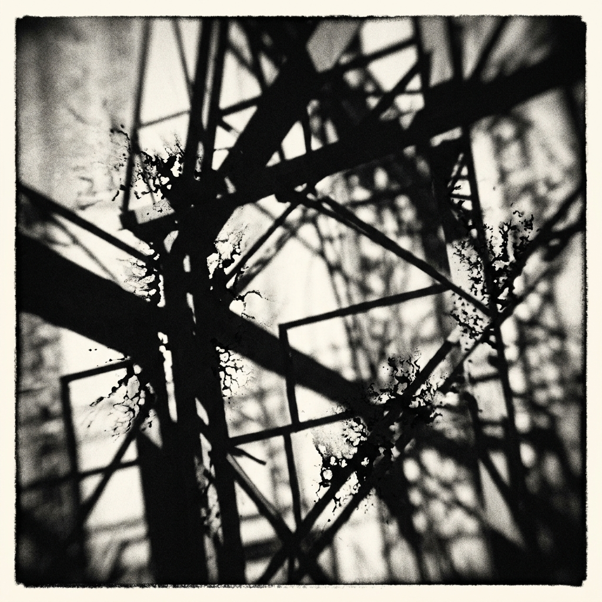
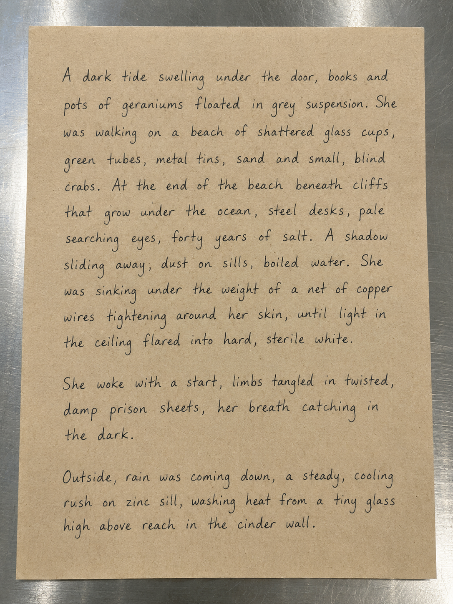
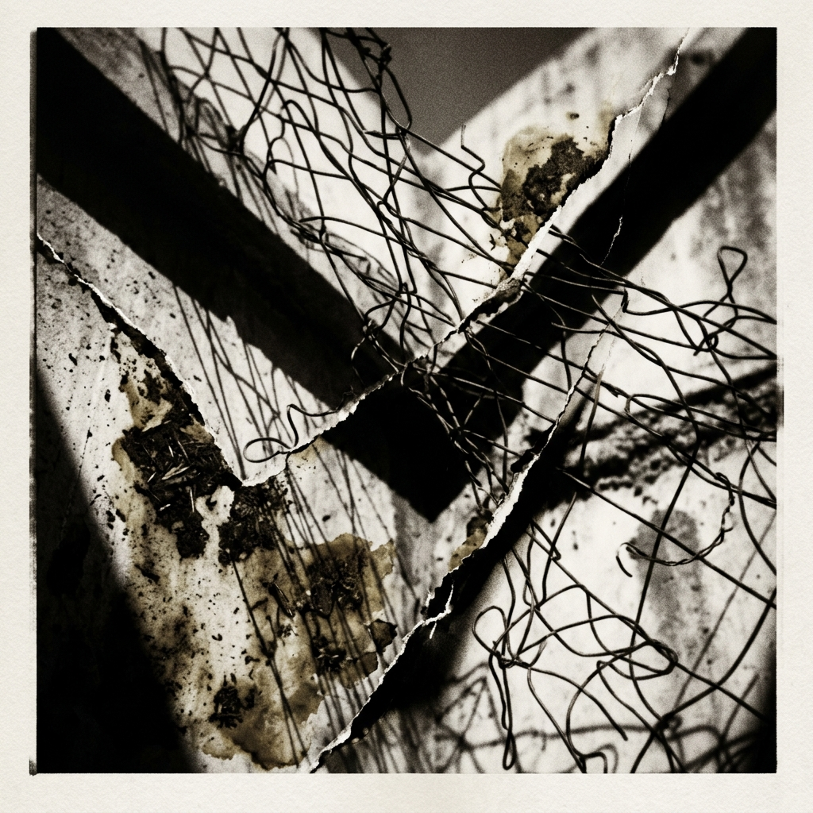

I. Mildew Emulsion
Mildew gathered on the pane where the gray city showed itself through dust. She drove a fingernail into the bulge of her palm, then scratched a trace of lime residue off the glass. The damp heat was a barrier, a soft life living between the room and the street four floors below where she could see a meal-smash cyclist pedaling through the torpor. Around the corner, she knew there would be teenagers jumping into the circular stone fountain by the metro entrance, their laughter spattering on the statue: another conqueror, an implicit icon. The heat had been coming for days, and now lingered, thick and unmoving, a weight that stayed in the bones, a heaviness in the old stairwell long after the sun went down.
P. sat at the wooden table with his hands flat against pine, thumb tracing a knot in nicked wood: a table made before time began. He noted how the skin on his thumb had begun to crinkle, age, time, momentum, moss. Knuckles thick with the early swell of arthritic stiffness. Years working manually, harvested in aches. A matter of small physical alignments, communicated discomfort and memories. He leaned back exhaling, when she moved toward the stove.
The other, known as H. now, sat by the bookshelf, familiar, turning the dry leaf of a geranium retrieved from a red clay pot, over and over, absorbed in a silence neither felt the need to break. Leaf came away from stem with a tiny dry snap. The heat is now radiant through the glass, he said, his voice flat with a dry, technical precision that had kept them alive for decades. He did not look at her, D. the letter too well known to need confirming. Instead he scanned, as he often (always) did, checking the seams of rooms for silence/noise, the locks/creaks, the noises from the apartment next door where a child practiced violin scales with a stubborn, scraping repetition.
It will be fine for now, D. said, setting three mismatched clay cups on the table. The water has boiled.
She poured. The steam smelled of dried clover and dust.
Too hot for tea, P. muttered. D smiled. Residue of a disaster.
II. Contortions and Franchises

There was a new song on the radio yesterday, P. said, touching the edge of a lintel, examining its creases. Another one about harbors and storms.
I heard it, D. said. The archetype unravelling new clothes.
H.: An innocent girl sings about a tide coming in to wash the world.
P nodded, That's it. D. heard his loneliness, a quiet, cold substance like gravel. A slow, domestic habit of silent rage. H. had lived in a room three streets away for nine years and they did not visit together unless the sky was gray enough to blur the outlines of faces on the corner. Unless needed. Planning contortions.
It is the music they make now, P. said from the bookshelf, having risen, hands gently on the spines, his eyes watching the street, scanning for gaps, reconfigurations. It has no middle. It is a beat devoted to replication, then an autotune voice recorded in a bathroom.
Pleasantries is what they have, D. said.
Distractions, said H. tugging a tiny escaped sprig of floating peppermint onto the rim of the cup.
D. sliced the dark bread. Furrows, contours. The knife was old, the blade was sharp, the wooden handle secured with two copper rivets that had grown loose over the seasons. Tied with twine. In the third cupboard from the sink, behind the sacks of dried yellow peas and the tins of sardines, under the twine, there were three metal canisters of that she hadn't opened in years. She did not look at the cupboard. She had trained herself.
We could use some of it now, P. said, his eyes closing for a moment.
Nonsense, the other said. We will wait.
They say the heat in the southern hemisphere is forty-five degrees in the shade, H. said, reaching for his cup. In the valleys where they grow the coffee.
The systems are tired, P. said, his tea untouched, still at the window, looking out but not seen, peering from the edge, in the shadows where the sun had not yet reached. Science is just impotent numbers. It changes nothing. The market does not care about the reports.
Hospice planet, H. said.
Pillage and plunder, D. said, sitting down between them. A chair she had known for 25 years. Sotheby's. Millions of dollars for a square of canvas wiped with grease. Just another way to move complicity without anyone having to carry it.
P drank his tea now, quickly, as if to be done with it, seated, his eyes closed, speaking. The market down the street has new green crates, he said. Blue logo. Snap lid. Delivered Mon to Thurs.
They have them everywhere, D. said. That franchise is the same in every quarter.
She remembered a franchise three hundred miles to the south, many years ago, when the logo had been orange and the glass of the entry door had shattered with a sound like dry gravel under a boot. They had stood in the dark with their bags, their breathing loud in the small space behind the counter, while the cash drawer slid open with a metallic chime. Every franchise is the same; every franchise is different, she said softly.
It is, it was, P. said, not looking up, examining something on the floor now. A stain or a trace or a substance, merged long ago. No matter.
They did not say anything for a moment. Years migrated through each of them, invisible, settling like dust.
H. stood up and cleared his throat. A gesture they had for a time trained out of him. Wordless, he left. Silent, a ghost.
What a long strange road it has been, D. said out loud to herself.
She went to the narrow hallway to refill the salt. In the dark of the coat closet, behind three winter coats and boxes of hair dye, a long, heavy tube of green plastic lay in the corner under a heap of wool blankets. It had been there so long it had become part of the floorboards, a sheath that she had not touched since the season everything stopped.
She returned with the salt.
Should I water the plants? P. asked, his hand reaching for her wrist for a brief, dry second. The soil is white.
I will do it tonight, she said.

III. An Engineered Silence
They had asked her many names. They had shown her photographs of old men with thick spectacles and grey hair, men who lived in small rooms with houseplants and boxes of tea. She looked at the photographs and saw only the gray paper, the black ink of the printer.
The cell had no draft. The walls were smooth, a gray concrete that had no smell of damp or clover. The light came from a square in the ceiling that stayed white all night, a hard, silent eye that did not blink.
She did not know their names. She did not know the street where the other had his room, or the name the former lover used when he went to the clinic for his knuckles. The system they had made thirty years ago had been perfect in its coldness; it had insulated each of them from the other’s choices, so that when the lock turned in her door and the three men in blue jackets came in with their plastic bags, she had nothing to give them but her own silence.
The toothbrush they had found in her glass had the DNA of a man she had loved forty years ago, a somatic trace left on a blue plastic handle. It was a fact, a small science that belonged to the apparatus.
But she did not know where he slept.
Somewhere else, in a quarter she had never visited, two old men whose names had been washed away by three decades of silence settled into their beds. One of them turned his face to the wall to keep the cold from his ears. The other listened to the hum of an old refrigerator in the kitchen and the sound of the rain starting on the zinc sill. Safe in a sense. Anonymous in a way.
